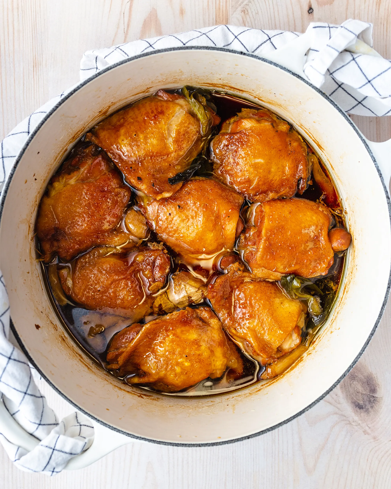

Return Home

Shoyu chicken is a dish that originated from Hawaii. It is not traditional Hawaiian food, rather it is a dish made by locals. The dish is chicken (usually skin-on bone-in thighs) cooked in a marinade of shoyu (soy sauce) and served over a bed of rice.
- Chicken Thighs, 8 (bone-in skin-on preferred)
- Shoyu, 1 cup (shoyu is soy sauce)
- Brown Sugar, 1/4 cup (tightly packed)
- Honey, 1/4 cup
- Mirin, 1/4 cup
- Garlic, 4 cloves crushed
- Ginger, 3-in peeled
- Green Onion, 4 stalks
- Mix shoyu, water, brown sugar, honey, mirin, garlic, ginger, and green onion in a large bowl or plastic bag
- Add chicken to bowl/bag and massage marinade into chicken
- Let marinade for at least 4 hours before cooking
- Add marinade (without chicken!) to a large pot and bring to a simmer over medium-high heat
- Add chicken to large pot in a flat layer
- Turn heat down to low, cover the pot, and let simmer for 30 minutes
- After 30 minutes, remove pot lid, flip all pieces of chicken over, and turn the heat back up to medium high heat
- Let chicken cook for another 30 minutes, uncovered
- Remove all contents in the pot and place it in a serving dish
- Make a bed of rice on a plate, place a cooked piece of shoyu chicken over the rice, spoon some sauce over the chicken and rice
- Enjoy!